Ingredientes
Proteínas seleccionadas
Sin rellenos
Trazabilidad
En Kirocorp reunimos snacks naturales premium y ropita para perros y gatos, con compra directa, selección cuidada y delivery coordinado en Lima.
Ingredientes
Proteínas seleccionadas
Proceso
Deshidratado y limpio
Entrega
Compra rápida en Lima

Vida real con Kirocorp
Snacks naturales y ropita elegida para acompañarlos mejor
Selección destacada
Una selección pensada para compra directa, mejor percepción de calidad y una propuesta más clara para el día a día.
Catálogo Kirocorp
Una misma tienda para resolver premio, look y compra directa sin complicarte.

Snack premium
Orejas de cerdo premium

Ropita premium
Opciones cómodas para gatitos con estilo
Compra directa
Revisa snacks y ropita, confirma disponibilidad y coordina tu pedido en una sola conversación.
Una galería pensada para mostrar cómo se ve el premio en uso: en entrenamiento, en casa y en ese instante en que tu perro ya sabe que viene algo rico.

Snacks naturales Kirocorp para celebrar buen comportamiento, reforzar hábitos y convertir cada recompensa en un momento especial.

Texturas y sabores que hacen que el perro responda rápido cuando toca aprender, obedecer o simplemente disfrutar.

Porciones fáciles de ofrecer para cachorros curiosos que están aprendiendo a probar premios nuevos sin complicarse.

Un snack con presencia y aroma que ayuda a mantener la atención del perro durante rutinas de aprendizaje.

Una opción ideal para perros que disfrutan masticar y para tutores que buscan una recompensa simple y práctica.

Perfecto para premiar varias veces en una sesión sin perder control de porción ni calidad de producto.

Funciona bien en sesiones cortas porque el premio aparece rápido y mantiene al perro conectado con la dinámica.

Para perros que responden mejor cuando el premio se siente especial, sabroso y distinto al snack de siempre.

Un cierre con foco en el producto y en la reacción real del perro, para dejar claro que el snack sí funciona.
Ideales para adiestrar, relajar y nutrir

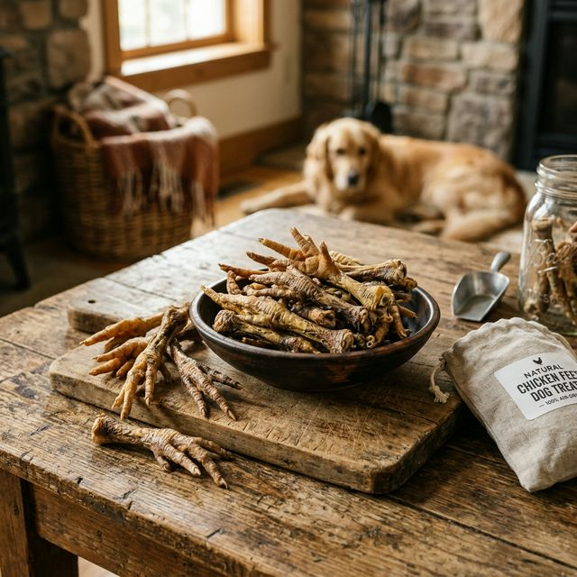
⭐ PopularPatas de pollo deshidratadas con colágeno natural para una salud óptima, textura crocante que ayuda a remover placa y mantener un aliento fresco.
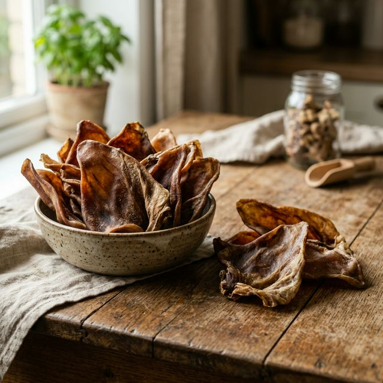
Snack natural con textura resistente, ideal para una masticación prolongada que contribuye a la limpieza dental y al fortalecimiento de las encías.

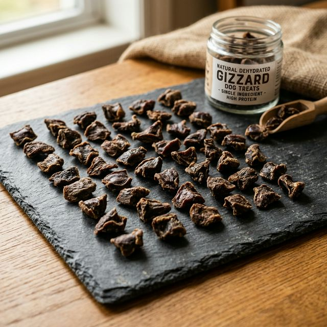
Mollejas de pollo, proteína pura, alto paladar y sin azúcares añadidos. Ideal para reforzar entrenamiento.

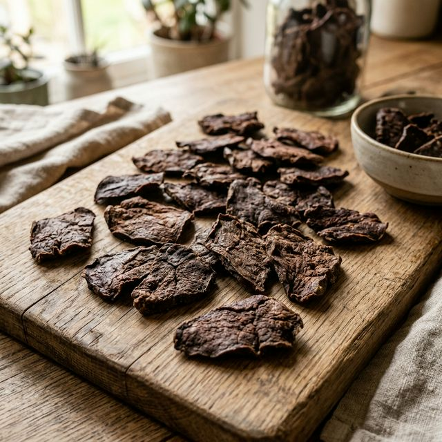
Higado de pollo deshidratado fuente natural de omegas 3-6-9 para pelaje brillante y piel sana durante todo el año.

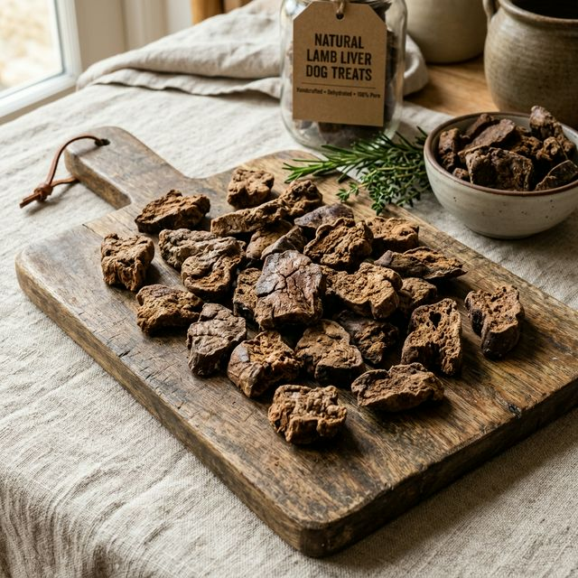
🍖 GourmetHígado de cordero 100% natural, deshidratado lentamente para conservar sabor y nutrientes. Snack gourmet alto en proteína y hierro, ideal como premio o refuerzo nutricional.

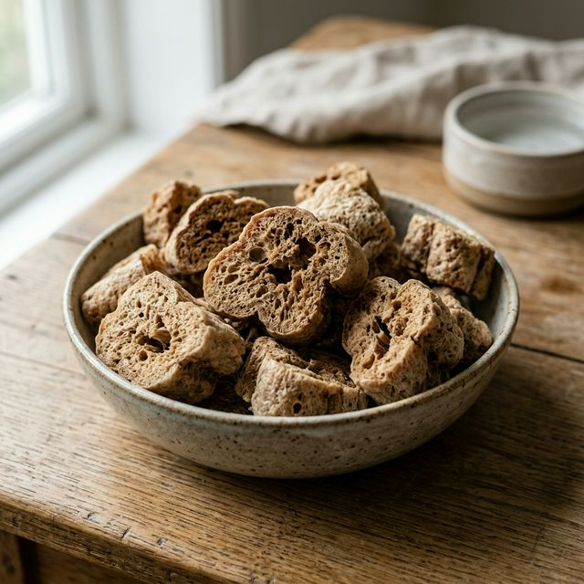
🍖 GourmetBofe de cordero 100% natural, deshidratado para lograr una textura ligera y muy palatable. Snack gourmet rico en proteína, perfecto para premios de alto valor y entrenamiento.
Familias que ya transformaron la forma de premiar a sus perros.

“En casa tenemos tres perros y este snack nos ayudó muchísimo con el entrenamiento. Les encanta y se nota que está hecho con ingredientes reales.”

“Lo mejor es que puedo premiarlas sin preocuparme por aditivos. Son pequeñas, lo bastante crocantes y perfectas para tenerlas siempre a mano.”

“Con cinco perros en casa necesitábamos algo que guste a todos. La variedad de sabores y la textura hicieron que el premio funcione perfecto en nuestra rutina.”

“Max es un perro mayor y el snack le cayó perfecto: suave, nutritivo y fácil de masticar. Además, lo espera con una emoción impresionante.”

“Después de los paseos, Luna y Sky ya reconocen el empaque. Me gusta porque es un premio natural y la calidad se siente desde el primer momento.”

“Pakhi suele ser selectivo con la comida, pero este snack lo convenció de inmediato. Lo uso como premio en casa y también en caminatas.”

“Me gustó que el pedido llegó rápido y que mis perritas lo aceptaron sin problema. Ya es parte de nuestra rutina semanal de premios.”
Seleccionamos insumos reales, los preparamos con cuidado, controlamos el deshidratado y cerramos cada lote con una revisión final antes de enviarlo.
Seleccionamos materias primas frescas, de buena procedencia y con la calidad que buscamos.
Limpiamos, recortamos y porcionamos cada pieza para que el proceso sea uniforme y seguro.
Aplicamos tiempo y temperatura precisos para conservar sabor, textura y mejor presentación.
Verificamos consistencia, apariencia y sellado antes de dejar cada lote listo para salir.
Lo enviamos coordinado y llega listo para que tu mascota lo disfrute sin complicaciones.
Escríbenos y te guiaremos para elegir el snack perfecto según edad, tamaño y objetivos.
¿Te interesa formar parte del equipo Kirocorp?
Trabaja con nosotros arrow_forwardUnimos atención, formación, bienestar y acompañamiento para ofrecer soluciones concretas alrededor del cuidado canino.
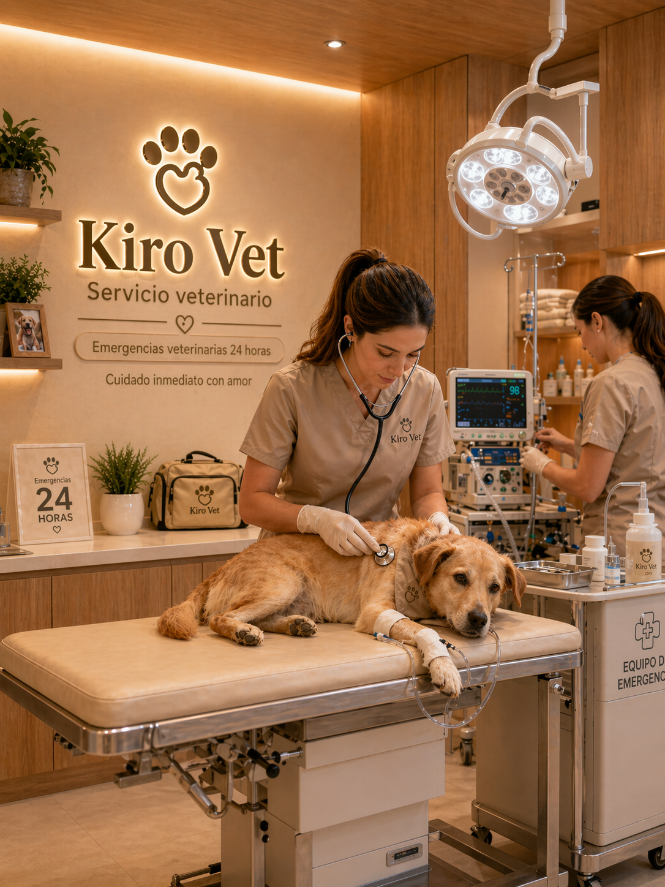
Atención 24/7Salud y atención
Atención veterinaria 24/7 para perritos, con orientación rápida y acompañamiento cuando más lo necesitan.
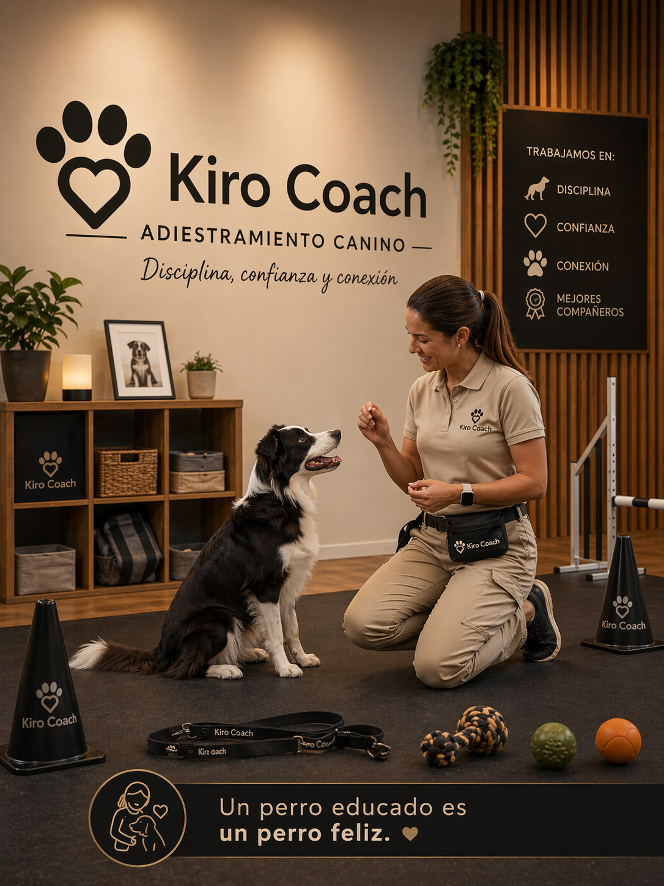
AdiestramientoConducta y aprendizaje
Adiestramiento canino para fortalecer hábitos, mejorar la convivencia y lograr una comunicación más clara.
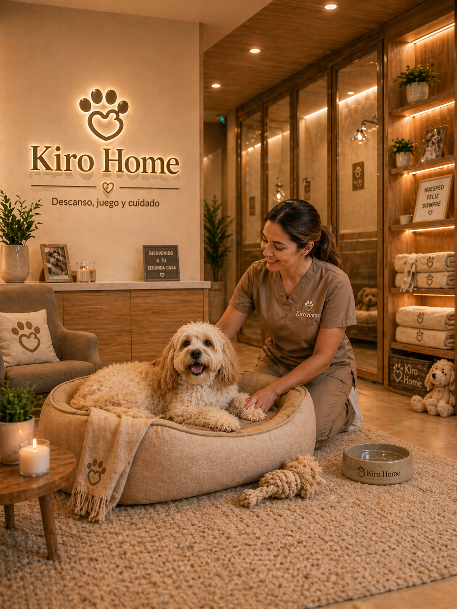
HospedajeHospedaje seguro
Hospedaje canino pensado para que tu perro esté cómodo, acompañado y bien cuidado mientras no estás.
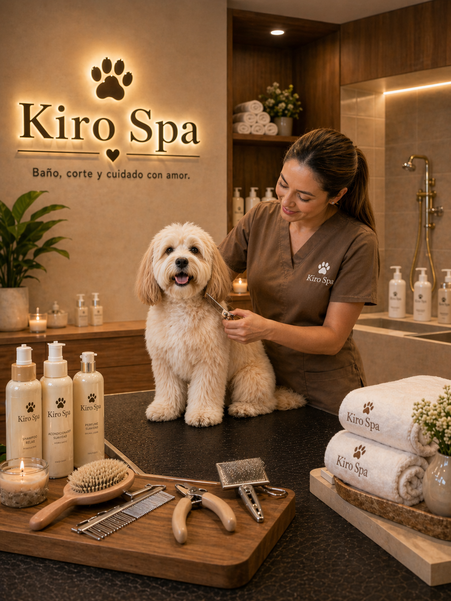
Spa caninoBienestar y grooming
Spa para perros con foco en confort, higiene y una experiencia de cuidado más agradable y completa.
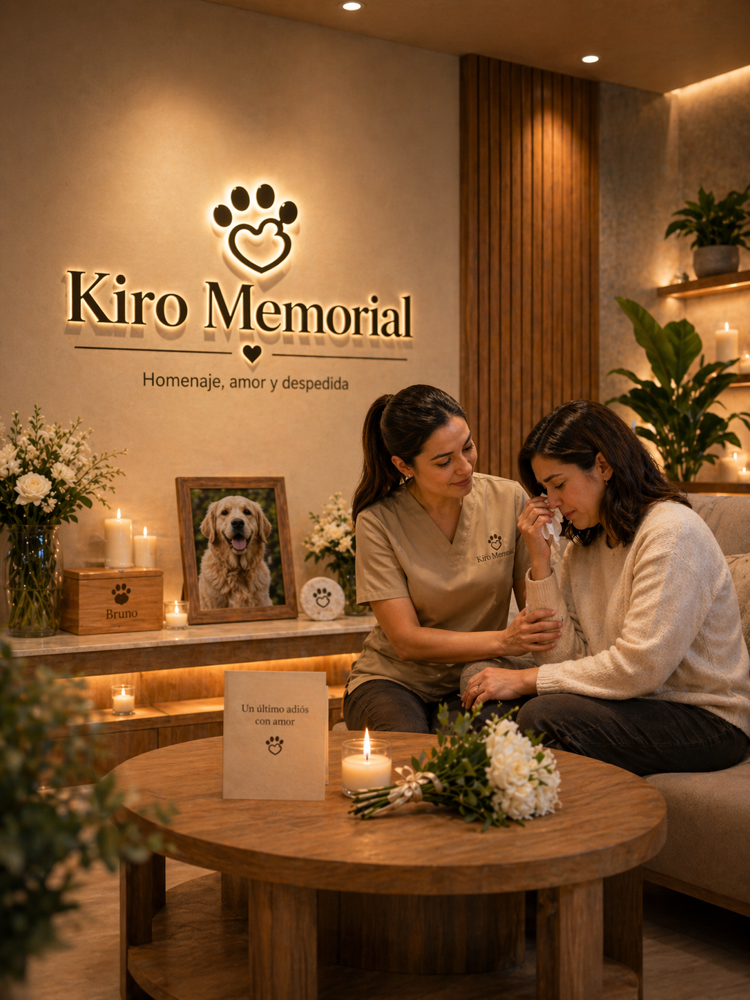
AcompañamientoDespedida con respeto
Servicios funerarios para perros con un trato humano y respetuoso en momentos delicados para la familia.
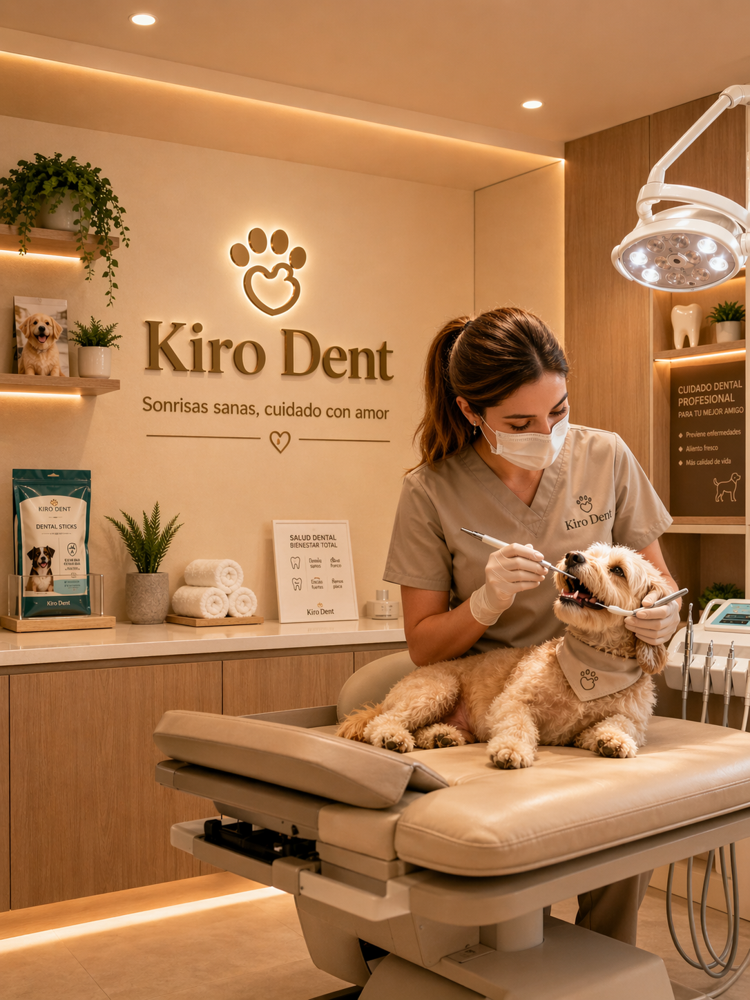
Cuidado dentalHigiene oral y prevención
Cuidado dental para perros con foco en higiene oral, prevención y acompañamiento para mantener una boca sana.